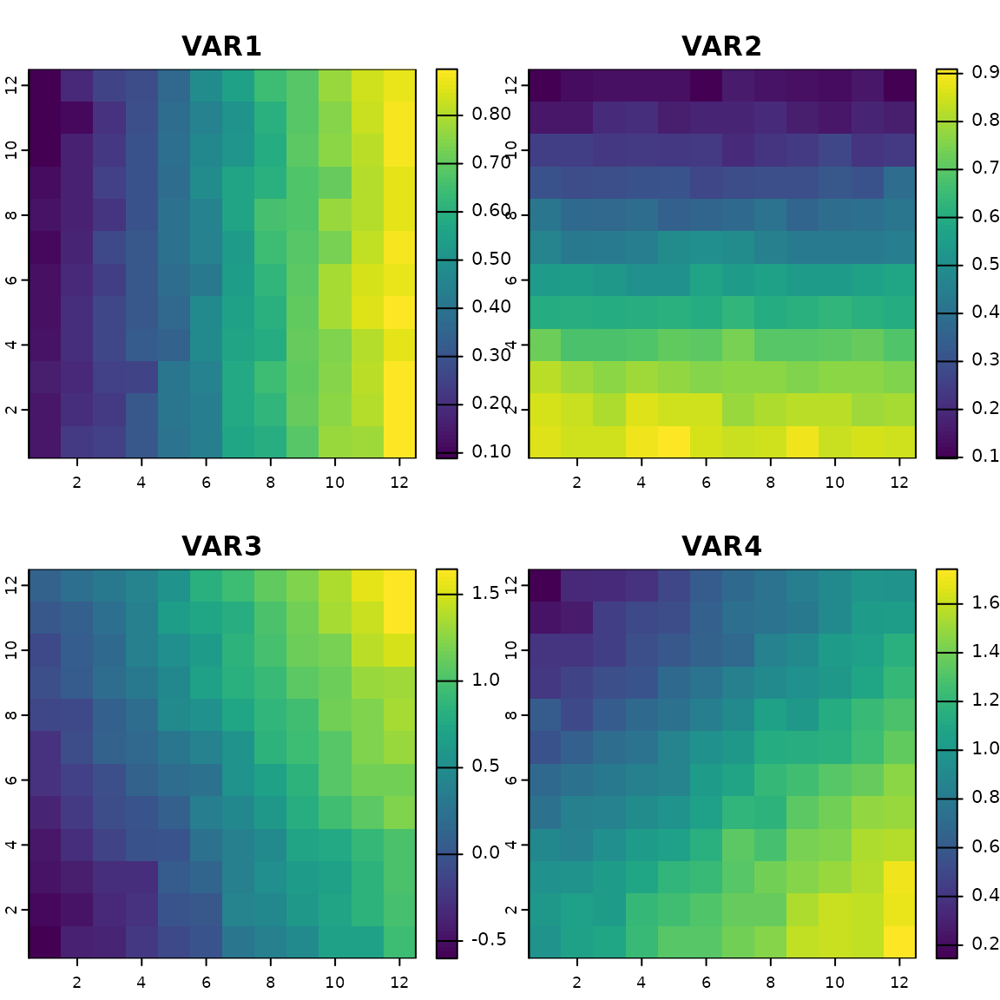

Vignette package rdadapt v1.0
Thibaut Capblancq & Maya Gueguen
2024
Source:vignettes/vignette_tutorial.Rmd
vignette_tutorial.Rmdrdadapt was developed to facilitate the exploration and projection of the gene ~ environment relationship across current and future landscapes. The packages provides various statistical tools to conduct landscape genomics analyses going from identifying the the genetic bases of adaptation within a species to predict future population maldaptation to climate change.
In the following, we show how the rdadapt package can perform variance partitioning, genome scans for selection, adaptive index projection on the landscape, as well as estimation of genomic offsets and identification of co-varying modules of adaptive loci or discrete adaptive groups of individual or populations.
These analyses were inspired from various studies:
- Capblancq et al. 2018
- Forester et al. 2018
- Capblancq et al. 2020
- Capblancq & Forester 2021
- Capblancq et al. 2023
- Hoste et al. 2023
We show how to run the package using XXX
To run the package, you need to install the package and load it using the following command lines:
#install.packages("rdadapt")
#library(rdadapt)
library(vegan)
library(robust)
library(ggplot2)
library(terra)
library(qvalue)
library(foreach)
library(plyr)
library(viridis)
library(factoextra)
library(reshape2)
- Data Preparation
1.1. Genetic dataset
## Loading genetic dataset
Y <- read.csv2("../data/genome.csv", sep = ",", head = TRUE, row.names = 1)
Y[1:5,1:5]## X2 X3 X5 X6 X11
## V10 2 0 0 1 0
## V11 1 0 0 2 0
## V12 2 0 0 0 0
## V13 2 0 0 2 0
## V14 2 0 0 2 01.2. Metadata individuals and populations
## Get population labels
pop <- read.csv2("../data/pop.csv", sep = ",", head = TRUE)[,-1]
## Get individual coordinates
coord <- read.csv2("../data/position.csv", sep = ",", head = TRUE)[,-1]
coord <- data.frame(apply(coord, 2, as.numeric))
plot(coord, cex =.2)
1.3. Climatic variables
## Loading the current and future climatic variables
xx.current <- read.table("../data/var_current.csv", sep = ",", head = TRUE, row.names = 1)
xx.future <- read.table("../data/var_futur.csv", sep = ",", head = TRUE, row.names = 1)
## Add extra variables (correlated)
xx.current <- data.frame(xx.current
, VAR3 = 2 * xx.current[, 1] - xx.current[, 2] + rnorm(nrow(xx.current), sd = 0.07)
, VAR4 = xx.current[, 1] + xx.current[, 2] + rnorm(nrow(xx.current), sd = 0.08))
xx.future <- data.frame(xx.future
, VAR3 = 2 * xx.future[, 1] - xx.future[, 2] + rnorm(nrow(xx.future), sd = 0.07)
, VAR4 = xx.future[, 1] + xx.future[, 2] + rnorm(nrow(xx.future), sd = 0.08))
# Rasterize the variables
xx.ras.current <- rast(data.frame(x = rep(1:12, time = 12)
, y = rep(1:12, each = 12)
, aggregate(xx.current, by = list(ceiling(as.numeric(coord$x))
, ceiling(as.numeric(coord$y)))
, mean)[, -c(1, 2)])
, type = "xyz"
, crs = crs("epsg:4326"))
plot(xx.ras.current)
xx.ras.future <- rast(data.frame(x = rep(1:12, time = 12)
, y = rep(1:12, each = 12)
, aggregate(xx.future, by = list(ceiling(as.numeric(coord$x))
, ceiling(as.numeric(coord$y)))
, mean)[, -c(1, 2)])
, type="xyz"
, crs = crs("epsg:4326"))
plot(xx.ras.future)
## Randomly selects only 25 populations to mimic more what we have in our empirical datasets
samp <- which(pop %in% sample(1:100, 25, replace = FALSE))
## Subsets the datasets
coord.samp <- coord[samp,]
plot(coord.samp, col = "red")
Y.samp <- Y[samp,]
xx.current.samp <- xx.current[samp,]
xx.future.samp <- xx.future[samp,]
- Genome Scan
2.1 Identifying loci under selection using RDA

We then had to choose a number of RDA axes to include when conducting the genome scan.
screeplot(RDA_env, main="Eigenvalues of constrained axes")
Looking at the proportion of variance explained by each axis, we decided to use the first two axes.
## Function rdadapt
source("../R/rdadapt.R")
## Running the function with K = 2
rdadapt_env<-rdadapt(RDA_env, 2)One critical step when conducting a genome scan is to set a pertinent p-value threshold to identify the outlier loci. Here, we used a Bonferroni correction to account for multiple testing.
## P-values threshold after Bonferroni correction
thres_env <- 0.01/length(rdadapt_env$p.values)
## Identifying the loci that are below the p-value threshold
outliers <- (1:ncol(Y))[which(rdadapt_env$p.values<thres_env)]The function finds 215 outliers
## Get adaptive loci for env variable 1 and env variable 2
causal1 <- as.numeric(read.csv2("../data/mutationm2.csv", sep = ",", head = TRUE)[,-1])
causal2 <- as.numeric(read.csv2("../data/mutationm3.csv", sep = ",", head = TRUE)[,-1])
## True positive ratio
sum(outliers %in% causal1 | outliers %in% causal2)/length(outliers)
## False negative ratio
sum(!(causal1 %in% outliers))+sum(!(causal2 %in% outliers))/(length(causal1)+length(causal2))Once the outliers have been identified, it can be useful to visualize their distribution in comparison with neutral loci using either an RDA biplot or a Manhattan plot.
# ## Formatting table for ggplot
# locus_scores <- scores(RDA_env, choices=c(1:2), display="species", scaling="none") # vegan references "species", here these are the loci
# TAB_loci <- data.frame(names = row.names(locus_scores), locus_scores)
# TAB_loci$type <- "Neutral"
# TAB_loci$type[TAB_loci$names%in%outliers$Loci] <- "All outliers"
# TAB_loci$type[TAB_loci$names%in%outliers_rdadapt_env] <- "Top outliers"
# TAB_loci$type <- factor(TAB_loci$type, levels = c("Neutral", "All outliers", "Top outliers"))
# TAB_loci <- TAB_loci[order(TAB_loci$type),]
# TAB_var <- as.data.frame(scores(RDA_env, choices=c(1,2), display="bp")) # pull the biplot scores
#
# ## Biplot of RDA loci and variables scores
# ggplot() +
# geom_hline(yintercept=0, linetype="dashed", color = gray(.80), size=0.6) +
# geom_vline(xintercept=0, linetype="dashed", color = gray(.80), size=0.6) +
# geom_point(data = TAB_loci, aes(x=RDA1*20, y=RDA2*20, colour = type), size = 1.4) +
# scale_color_manual(values = c("gray90", "#F9A242FF", "#6B4596FF")) +
# geom_segment(data = TAB_var, aes(xend=RDA1, yend=RDA2, x=0, y=0), colour="black", size=0.15, linetype=1, arrow=arrow(length = unit(0.02, "npc"))) +
# geom_text(data = TAB_var, aes(x=1.1*RDA1, y=1.1*RDA2, label = row.names(TAB_var)), size = 2.5, family = "Times") +
# xlab("RDA 1") + ylab("RDA 2") +
# facet_wrap(~"RDA space") +
# guides(color=guide_legend(title="Locus type")) +
# theme_bw(base_size = 11, base_family = "Times") +
# theme(panel.background = element_blank(), legend.background = element_blank(), panel.grid = element_blank(), plot.background = element_blank(), legend.text=element_text(size=rel(.8)), strip.text = element_text(size=11))
#
# ## Manhattan plot
# Outliers <- rep("Neutral", length(colnames(AllFreq)))
# Outliers[colnames(AllFreq)%in%outliers$Loci] <- "All outliers"
# Outliers[colnames(AllFreq)%in%outliers_rdadapt_env] <- "Top outliers"
# Outliers <- factor(Outliers, levels = c("Neutral", "All outliers", "Top outliers"))
# TAB_manhatan <- data.frame(pos = 1:length(colnames(AllFreq)),
# pvalues = rdadapt_env$p.values,
# Outliers = Outliers)
# TAB_manhatan <- TAB_manhatan[order(TAB_manhatan$Outliers),]
# ggplot(data = TAB_manhatan) +
# geom_point(aes(x=pos, y=-log10(pvalues), col = Outliers), size=1.4) +
# scale_color_manual(values = c("gray90", "#F9A242FF", "#6B4596FF")) +
# xlab("Loci") + ylab("-log10(p.values)") +
# geom_hline(yintercept=-log10(thres_env), linetype="dashed", color = gray(.80), size=0.6) +
# facet_wrap(~"Manhattan plot", nrow = 3) +
# guides(color=guide_legend(title="Locus type")) +
# theme_bw(base_size = 11, base_family = "Times") +
# theme(legend.position="right", legend.background = element_blank(), panel.grid = element_blank(), legend.box.background = element_blank(), plot.background = element_blank(), panel.background = element_blank(), legend.text=element_text(size=rel(.8)), strip.text = element_text(size=11))
- Adaptive Index
3.1. Adaptively enriched genetic space
The 91 putative adaptive loci can be used as multivariate response in a new “adaptively enriched” RDA, using the 9 selected bioclimate variables as explanatory variables.
## Adaptively enriched RDA
RDA_outliers <- rda(Y[,outliers] ~ ., xx.current)An RDA biplot allows us to visualize the relationship between the 91 putative adaptive loci and the underlying climatic variables.
## RDA biplot
TAB_loci <- as.data.frame(scores(RDA_outliers, choices=c(1:2), display="species", scaling="none"))
TAB_var <- as.data.frame(scores(RDA_outliers, choices=c(1:2), display="bp"))
ggplot() +
geom_hline(yintercept=0, linetype="dashed", color = gray(.80), size=0.6) +
geom_vline(xintercept=0, linetype="dashed", color = gray(.80), size=0.6) +
geom_point(data = TAB_loci, aes(x=RDA1*3, y=RDA2*3), colour = "#EB8055FF", size = 2, alpha = 0.8) + #"#F9A242FF"
geom_segment(data = TAB_var, aes(xend=RDA1, yend=RDA2, x=0, y=0), colour="black", size=0.15, linetype=1, arrow=arrow(length = unit(0.02, "npc"))) +
geom_text(data = TAB_var, aes(x=1.1*RDA1, y=1.1*RDA2, label = row.names(TAB_var)), size = 2.5, family = "Times") +
xlab("RDA 1 (XX%)") + ylab("RDA 2 (XX%)") +
facet_wrap(~"Adaptively enriched RDA space") +
guides(color=guide_legend(title="Locus type")) +
theme_bw(base_size = 11, base_family = "Times") +
theme(panel.grid = element_blank(), plot.background = element_blank(), panel.background = element_blank(), strip.text = element_text(size=11))
3.2. Adaptive index across the landscape
The scores of the environmental variables along the RDA axes can be used to calculate a genetic-based index of adaptation for each environmental pixel of the landscape. This index is estimated independently for each RDA axis of interest using the formula: \[ \sum_{i = 1}^{n}{a_ib_i} \] Where a is the climatic variable score (loading) along the RDA axis, b is the standardized value for this particular variable at the focal pixel, and i refers to one of the n different variables used in the RDA model.
## Function to predict the adaptive index across the landscape
source("../R/adaptive_index.R")
## Running the function for all pixels
res_RDA_proj_current <- adaptive_index(RDA = RDA_outliers, K = 2, env = xx.ras.current, env_mask = NULL, method = "loadings")The adaptive index thus provides an estimate of adaptive genetic similarity or difference of all pixels on the landscape as a function of the values of the environmental predictors at that location. When projected on a map it allows visualizing the different adaptive gradients across a species range.
## Vectorization of the climatic rasters for ggplot
RDA_proj <- list(res_RDA_proj_current$RDA1, res_RDA_proj_current$RDA2)
RDA_proj <- lapply(RDA_proj, function(x) as.data.frame(x, xy = TRUE))
for(i in 1:length(RDA_proj)){
RDA_proj[[i]][,3] <- (RDA_proj[[i]][,3]-min(RDA_proj[[i]][,3]))/(max(RDA_proj[[i]][,3])-min(RDA_proj[[i]][,3]))
colnames(RDA_proj[[i]])[3] <- "value"
}
## Adaptive genetic turnover projected across lodgepole pine range for RDA1 and RDA2 indexes
TAB_RDA <- as.data.frame(do.call(rbind, RDA_proj[1:2]))
TAB_RDA$variable <- factor(c(rep("RDA1", nrow(RDA_proj[[1]])), rep("RDA2", nrow(RDA_proj[[2]]))), levels = c("RDA1","RDA2"))
ggplot(data = TAB_RDA) +
#geom_sf(data = admin, fill=gray(.9), size=0) +
geom_raster(aes(x = x, y = y, fill = cut(value, breaks=seq(0, 1, length.out=10), include.lowest = T))) +
scale_fill_viridis_d(alpha = 0.8, direction = -1, option = "A", labels = c("Negative scores","","","","Intermediate scores","","","","Positive scores")) +
#geom_sf(data = admin, fill=NA, size=0.1) +
#coord_sf(xlim = c(-148, -98), ylim = c(35, 64), expand = FALSE) +
xlab("Longitude") + ylab("Latitude") +
guides(fill=guide_legend(title="Adaptive index")) +
facet_grid(~ variable) +
theme_bw(base_size = 11, base_family = "Times") +
theme(panel.grid = element_blank(), plot.background = element_blank(), panel.background = element_blank(), strip.text = element_text(size=11))
- Genomic Offset
4.1. Predicting population future maladaptation
Once the genetic ~ environment relationship is characterized, it can be extrapolated to future environments to predict a potential shift in adaptive optimum induced by climate change.The RDA-based method to predict this future maladaptation is relatively simple. As done above, RDA can be used to predict the optimal adaptive genetic composition for each environmental pixel under consideration (Adaptive Index in Section 5), using both current and future environmental conditions. The difference between the two predictions provides an estimate of the change in genetic composition that would be required to track climate change.
## Function to predict genomic offset from a RDA model
source("../R/genomic_offset.R")
## Projecting the adaptive landscape after the change in environment
res_RDA_proj <- genomic_offset(RDA = RDA_outliers, K = 2, env_pres = xx.ras.current, env_fut = xx.ras.future, env_mask = NULL, method = "loadings")
## Table global genetic offset
RDA_proj_offset <- as.data.frame(res_RDA_proj$Proj_offset_global, xy = TRUE)
## Projecting genomic offset on a map
library(wesanderson)
colors <- wes_palette("Zissou1", 100, type = "continuous")
ggplot(data = RDA_proj_offset) +
geom_raster(aes(x = x, y = y, fill = Global_offset), alpha = 1) +
scale_fill_gradientn(colours = colors, guide = guide_legend(title="Genomic offset", title.position = "top", title.hjust = 0.5, ncol = 1, label.position="right")) +
xlab("Longitude") + ylab("Latitude") +
theme_bw(base_size = 11, base_family = "Times") +
theme(panel.grid = element_blank(), plot.background = element_blank(), panel.background = element_blank(), strip.text = element_text(size=11))
## Verifying that prediction are matching with a decline in fitness on the landscape
diff.env <- sqrt(rowSums(as.data.frame((xx.ras.current[[1:2]] - xx.ras.future[[1:2]])^2)))
plot(diff.env, RDA_proj_offset$Global_offset)
fitness <- read.table("../data/fitness_futur.csv", header = T, sep = ",")
fitness.future <- rast(data.frame(x = rep(1:12, time = 12),
y = rep(1:12, each = 12),
aggregate(fitness[,2], by = list(ceiling(as.numeric(coord$x)), ceiling(as.numeric(coord$y))), mean)[,-c(1,2)]),
type="xyz",
crs = crs("epsg:4326"))
plot(log(as.data.frame(fitness.future)[,1])~RDA_proj_offset$Global_offset)
4.2. Predicting geographic genomic offset
A challenge associated with any predictive method is to find ways to validate the predictions. Here, we estimated a geographic genomic offset between the climate of each source population and the climate of a hypothetical garden (cell 1,1).
## Estimates genomic offset for specific populations
offset_samp <- genomic_offset(RDA = RDA_outliers, K = 2, env_pres = xx.current.samp, env_fut = xx.future.samp, method = "loadings")
## Visualization
table <- data.frame(coord.samp, offset_samp$genomic_offset)
table <- melt(table, id.vars = c("x","y"))
ggplot() +
geom_point(data=table, aes(x, y, color = value)) +
scale_color_viridis(direction = -1, alpha=.8) +
labs(color = "Genomic offset") +
facet_wrap(~variable) +
theme_bw(base_size = 12, base_family = "Times") +
theme(panel.background = element_blank(), panel.grid = element_blank(), strip.text = element_text(size=12), plot.background = element_blank())
## Estimates genomic offset for a transplantation experiment
offset_gar <- genomic_offset(RDA = RDA_outliers, K = 2, env_pres = xx.current, env_gar = xx.current[100,], method = "loadings")
## Visualization
table <- data.frame(coord, offset_gar$genomic_offset)
table <- melt(table, id.vars = c("x","y"))
ggplot() +
geom_point(data=table, aes(x, y, color = value)) +
geom_point(data=coord[100,], aes(x, y), colour = "black", size = 3, shape = 4) +
scale_color_viridis(direction = -1, alpha=.8, option = "magma") +
labs(color = "Genomic offset") +
facet_wrap(~variable) +
theme_bw(base_size = 12, base_family = "Times") +
theme(panel.background = element_blank(), panel.grid = element_blank(), strip.text = element_text(size=12), plot.background = element_blank())
Based on the adaptively enriched RDA space, we estimated a genomic offset between each source individual and the common garden climatic conditions.
This geographic genomic offset can then be compared to different fitness traits in the garden to estimate the impact of this predicted maladaptation on seedling fitness. We can also compare the influence of genomic offset on fitness with the impact of a basic climate transfer distance estimated between each source population and the garden from the climatic variables only (using Mahalanobis distance).
- Loci Modules
We can find covarying sets of loci on the RDA space
## Function to find groups of loci on the RDA space
source("../R/loci_modules.R")
## Groups the outlier loci into two modules
modules <- loci_modules(RDA = RDA_outliers, nb_clusters = 4)
## Visualization
ggplot() +
geom_polygon(data=modules$polygons, aes(x, y, colour = factor(cluster), fill = factor(cluster)), alpha=.2) +
geom_point(data=modules$loci, aes(x, y, colour = factor(cluster), fill = factor(cluster)), size = 2, alpha =.7) +
scale_fill_viridis(discrete=TRUE, direction = -1, alpha=.2) +
scale_color_viridis(discrete=TRUE, direction = -1, alpha = .7) +
xlab("Absolute score on RDA1") + ylab("Absolute score on RDA2") +
facet_wrap(~"Modules of outlier loci") +
theme_bw(base_size = 12, base_family = "Times") +
theme(legend.position="none", panel.background = element_blank(), panel.grid = element_blank(), strip.text = element_text(size=12), plot.background = element_blank())
- Adaptive groups
The goal here is to identify groups of individuals with the same adaptive background
## Function to find groups of loci on the RDA space
source("../R/adaptive_groups.R")
## New RDA model with only sample populations and outlier loci
RDA_samp <- rda(Y.samp[,outliers] ~ ., xx.current.samp)
## Finds N optimal groups among the individuals used to build the adaptive RDA space
groups <- adaptive_groups(RDA = RDA_samp, K = 2, nb_clusters = 2)
## Visualization in the RDA space
ggplot() +
geom_polygon(data=groups$polygons, aes(x, y, colour = factor(cluster), fill = factor(cluster)), alpha=.2) +
geom_point(data=groups$samples, aes(x, y, colour = factor(cluster), fill = factor(cluster)), size = 2, alpha =.7) +
scale_fill_viridis(discrete=TRUE, direction = -1, alpha=.2) +
scale_color_viridis(discrete=TRUE, direction = -1, alpha = .7) +
xlab("Score on RDA1") + ylab("Score on RDA2") +
facet_wrap(~"Adaptive groups") +
theme_bw(base_size = 12, base_family = "Times") +
theme(legend.position="none", panel.background = element_blank(), panel.grid = element_blank(), strip.text = element_text(size=12), plot.background = element_blank())
## Visualization on the landscape
tab <- data.frame(coord.samp, cluster = groups$samples$cluster)
plot(tab[,1:2], col = tab$cluster)
## Finds N groups on the adaptive landscape projected from the RDA model
groups <- adaptive_groups(RDA = RDA_samp, K = 2, env = xx.ras.current, nb_clusters = 9)
## Visualization in the RDA space
ggplot() +
geom_polygon(data=groups$polygons, aes(x, y, colour = factor(cluster), fill = factor(cluster)), alpha=.2) +
geom_point(data=groups$samples, aes(x, y, colour = factor(cluster), fill = factor(cluster)), size = 2, alpha =.7) +
scale_fill_viridis(discrete=TRUE, direction = -1, alpha=.2) +
scale_color_viridis(discrete=TRUE, direction = -1, alpha = .7) +
xlab("Score on RDA1") + ylab("Score on RDA2") +
facet_wrap(~"Adaptive groups") +
theme_bw(base_size = 12, base_family = "Times") +
theme(legend.position="none", panel.background = element_blank(), panel.grid = element_blank(), strip.text = element_text(size=12), plot.background = element_blank())